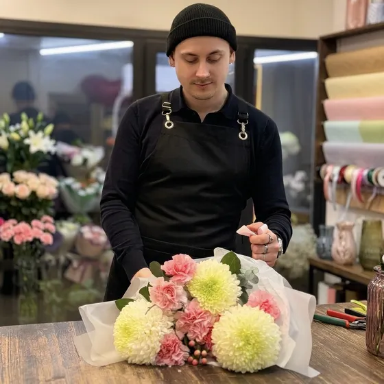

Выберите цветы, количество упаковок и лент. В названии каждой позиции указано, сколько стеблей или листов продаётся вместе. Минимальный заказ по конструктору — 3 000 ₽.

В конструкторе каждый сорт продаётся указанным комплектом. Выберите количество, затем добавьте бумагу и ленты.
Пионы Сара Бернар розовые, 3 стебля — пышные цветы с крупным многослойным бутоном и нежным розовым оттенком, которые даже в небольшом количестве выглядят объёмно и празднично. Такие пионы подойдут: - для нежного мини-монобукета в розовой гамме; - как акцент в романтической или свадебной композиции; - для декора стола, спальни или небольшой вазы дома. Пионы Сара Бернар ассоциируются с нежностью, романтикой и тёплыми чувствами. Чтобы цветы дольше радовали, сделайте свежий срез, уберите листья ниже уровня воды, поставьте стебли в чистую прохладную воду и не держите вазу рядом с батареей, фруктами или под прямыми солнечными лучами.
Розы Мондиаль белые, 3 стебля
810 ₽Описание
Розы Мондиаль белые, 3 стебля - розы с крупным плотным бутоном и белым оттенком, которые даже в небольшом количестве смотрятся элегантно и аккуратно. Такие розы подойдут: - для лаконичного монобукета в светлой гамме; - как базовый акцент в сборной композиции с зеленью или пастельными цветами; - для декора стола или небольшой вазы дома или в офисе. Белые розы Мондиаль ассоциируются с чистотой, уважением и элегантностью. Даже 3 стебля создают аккуратный и стильный визуал без перегруженности. Чтобы розы дольше радовали, обновите срез на 1 см, уберите листья ниже уровня воды, поставьте в чистую прохладную воду и держите вдали от батарей, солнца и фруктов.
Розы Пинк Мондиаль розовые, 3 стебля
810 ₽Описание
Розовые розы Пинк Мондиаль, 3 стебля - розы с крупным плотным бутоном и мягким пудрово-розовым оттенком, которые даже в небольшом количестве смотрятся роскошно. Такие розы подойдут: - для нежного монобукета в пастельной гамме; - как акцент в сборной композиции с белыми и кремовыми цветами; - для декора стола или небольшой вазы дома или в офисе. Розы Пинк Мондиаль ассоциируются с нежностью, заботой и теплом. Чтобы розы дольше радовали, обновите срез на 1 см, уберите листья ниже уровня воды, поставьте в чистую прохладную воду и держите вдали от батарей, солнца и фруктов.
Розы Ред Наоми красные, 3 стебля
630 ₽Описание
Красная роза Ред Наоми, 3 стебля - премиальные красные розы с крупным бутоном и глубоким насыщенным оттенком, которые даже в небольшом количестве выглядят выразительно. Такие розы подойдут: - для монобукета как романтического комплимента; - как яркий акцент в сборной композиции; - для декора стола или небольшой вазы, когда нужен выразительный красный акцент. Красные розы Ред Наоми ассоциируются с любовью, страстью и уважением. Чтобы они дольше радовали, сделайте свежий срез, уберите листья ниже уровня воды, поставьте стебли в чистую прохладную воду и не держите вазу рядом с батареей или под прямыми солнечными лучами.
Пионовидные розы Леди Априкот оранжевые, 3 стебля
750 ₽Описание
Пионовидные оранжевые розы Леди Априкот, 3 стебля - пышные розы с многослойным бутоном и теплым абрикосово-оранжевым оттенком, которые даже в небольшом количестве смотрятся как готовый букет-комплемент. Такие розы подойдут: - для яркого монобукета с характером; - как теплый акцент в сборной композиции; - для декора стола или небольшой вазы дома или в офисе. Розы Леди Априкот ассоциируются с теплом, радостью и заботой. Чтобы они дольше радовали, сделайте свежий срез, уберите листья ниже уровня воды, поставьте стебли в чистую прохладную воду и не ставьте вазу рядом с батареей или под прямые солнечные лучи.
Кустовые ромашки (танацетум) Камила белые, 3 стебля - легкие ветки с множеством мелких белых ромашковых соцветий и свежей природной фактурой. Даже 3 стебля создают воздушный объем и добавляют композиции ощущение полевого, натурального букета. Такие кустовые ромашки подойдут: - для нежного монобукета в летнем стиле; - как легкое наполнение в сборных букетах с пионами, хризантемами, диантусами и эвкалиптом; - для декора стола, небольшой вазы дома или в офисе; - для летних, свадебных, пастельных и полевых композиций. Танацетум Камила ассоциируется с легкостью, простотой и живой природной эстетикой. Белые мелкие соцветия делают букет более воздушным, свежим и визуально мягким. Чтобы цветы дольше радовали, обновите срез на 1-2 см, уберите листья ниже уровня воды, поставьте стебли в чистую прохладную воду и держите вдали от солнца, батарей и фруктов. Меняйте воду каждые 2 дня и убирайте увядшие соцветия, чтобы продлить свежесть всей ветки.
Французские розы Пинк Мондиаль розовые, 3 стебля
1 430 ₽Описание
Розовые французские розы Пинк Мондиаль, 3 стебля - розы с крупным плотным бутоном и мягким пудрово-розовым оттенком, которые даже в небольшом количестве выглядят достойно. Такие розы подойдут: - для нежного монобукета-комплемент в пастельной гамме; - как акцент в сборной композиции с белыми, кремовыми цветами и эвкалиптом; - для декора стола или небольшой вазы дома или в офисе. Французские розы Пинк Мондиаль ассоциируются с нежностью, заботой и теплом. Чтобы они дольше радовали, сделайте свежий срез, уберите листья ниже уровня воды, поставьте стебли в чистую прохладную воду и не ставьте вазу рядом с батареей или под прямые солнечные лучи.
Французские розы Мондиаль белые, 3 стебля
1 430 ₽Описание
Французские розы Мондиаль белые, 3 стебля - розы с крупным плотным бутоном и белым оттенком, которые даже в небольшом количестве выглядят аккуратно и элегантно. Такие розы подойдут: - для лаконичного монобукета-комплимента в светлой гамме; - как акцент в сборной композиции с кремовыми цветами и зеленью; - для декора стола или небольшой вазы дома или в офисе. Французские розы Мондиаль ассоциируются с чистотой, уважением и спокойной эстетикой. Даже 3 стебля создают аккуратную композицию без перегруженности. Чтобы розы дольше радовали, обновите срез на 1 см, уберите листья ниже уровня воды, поставьте стебли в чистую прохладную воду и держите вдали от батарей, прямого солнца и фруктов.
Кустовые хризантемы Алтай белые, 3 стебля
1 120 ₽Описание
Кустовые хризантемы Алтай белые, 3 стебля - аккуратные кустовые хризантемы с несколькими соцветиями на каждом стебле и белым оттенком. Даже в небольшом количестве выглядят объемно за счет множества цветков и создают легкий «облачный» эффект. Такие хризантемы подойдут: - для компактного монобукета в светлой гамме; - как база или дополнение в сборной композиции с розами, диантусами и зеленью; - для декора стола или небольшой вазы дома или в офисе. Кустовые хризантемы Алтай ассоциируются с чистотой, спокойствием и эстетикой. За счет формы они выглядят пышнее, чем классические одиночные цветы. Чтобы цветы дольше радовали, обновите срез на 1 см, уберите листья ниже уровня воды, поставьте в чистую прохладную воду и держите вдали от солнца, батарей и фруктов.
Кустовые хризантемы Кантри зеленые, 3 стебля
750 ₽Описание
Кустовые хризантемы Кантри зеленые, 3 стебля - кустовые хризантемы с несколькими соцветиями на каждом стебле и насыщенным зеленым оттенком. Даже 3 стебля дают хороший объем и создают аккуратный природный акцент в композиции. Такие хризантемы подойдут: - для минималистичного монобукета в зеленой гамме; - как база или контрастный акцент в сборных букетах с белыми, розовыми и кремовыми цветами; - для декора стола или небольшой вазы дома или в офисе. Кустовые хризантемы Кантри ассоциируются со свежестью, природой и спокойной современной эстетикой. Зеленый цвет делает композицию более живой и необычной без лишней яркости. Чтобы цветы дольше радовали, обновите срез на 1 см, уберите листья ниже уровня воды, поставьте в чистую прохладную воду и держите вдали от солнца, батарей и фруктов.
Хризантемы Магнум белые, 3 стебля
1 300 ₽Описание
Хризантемы Магнум белые, 3 стебля - крупные шарообразные хризантемы с плотным соцветием и белым оттенком. Даже 3 стебля создают выразительный объем и выглядят как полноценная композиция. Такие хризантемы подойдут: - для лаконичного монобукета в светлой гамме; - как акцент в сборной композиции с зеленью или пастельными цветами; - для декора стола или небольшой вазы дома или в офисе. Хризантемы Магнум ассоциируются с устойчивостью, аккуратностью и спокойной элегантностью. За счет плотной формы они держат форму букета. Чтобы цветы дольше радовали, обновите срез на 1 см, уберите листья ниже уровня воды, поставьте в чистую прохладную воду и держите вдали от солнца, батарей и фруктов.
Диантусы (гвоздики) Кантри зеленые, 3 стебля
570 ₽Описание
Диантусы (гвоздики) Кантри зеленые, 3 стебля - аккуратные гвоздики с рельефным бутоном и насыщенным зеленым оттенком. Даже в небольшом количестве выглядят свежо и необычно, добавляя композиции фактуру и природный акцент. Такие диантусы подойдут: - для минималистичного монобукета-комплемента в зеленой гамме; - как контрастный элемент в сборных букетах с белыми, розовыми и кремовыми цветами; - для декора стола или небольшой вазы дома или в офисе. Зеленые диантусы Кантри ассоциируются со свежестью, природой и современной эстетикой. Они делают букет более живым и интересным без "кричащих" оттенков. Чтобы цветы дольше радовали, обновите срез на 1 см, уберите листья ниже уровня воды, поставьте в чистую прохладную воду и держите вдали от солнца, батарей и фруктов.
Диантусы (гвоздики) Брют бежевые, 3 стебля
570 ₽Описание
Диантусы (гвоздики) Брют бежевые, 3 стебля - аккуратные гвоздики с рельефным бутоном и мягким кремово-бежевым оттенком. Даже в небольшом количестве выглядят деликатно и благородно, добавляя композиции спокойную нюдовую палитру и текстуру. Такие диантусы подойдут: - для лаконичного монобукета-комплемента в пастельной гамме; - как мягкий акцент в сборной композиции с белыми, розовыми и зелеными цветами; - для декора стола или небольшой вазы дома или в офисе. Диантусы Брют ассоциируются с спокойствием и современной эстетикой. Их оттенок не перегружает композицию и легко сочетается с другими цветами. Чтобы цветы дольше радовали, обновите срез на 1 см, уберите листья ниже уровня воды, поставьте в чистую прохладную воду и держите вдали от солнца, батарей и фруктов.
Диантусы (гвоздики) Джоди розовые, 3 стебля
570 ₽Описание
Диантусы (гвоздики) Джоди розовые, 3 стебля - аккуратные гвоздики с рельефным бутоном и нежным розовым оттенком. Даже в небольшом количестве выглядят мягко и объемно, добавляя композиции текстуру и легкость. Такие диантусы подойдут: - для компактного монобукета-комплемента в розовой гамме; - как нежный акцент в сборной композиции с белыми, кремовыми и зелеными цветами; - для декора стола или небольшой вазы дома или в офисе. Диантусы Джоди ассоциируются с нежностью, заботой и современной эстетикой. Их мягкий оттенок делает букет более живым и гармоничным без "кричащей" яркости. Чтобы цветы дольше радовали, обновите срез на 1 см, уберите листья ниже уровня воды, поставьте в чистую прохладную воду и держите вдали от солнца, батарей и фруктов.
Альстромерии Фифи Премиум розовые, 3 стебля
750 ₽Описание
Альстромерии Фифи Премиум розовые, 3 стебля - изящные ветки с несколькими бутонами на каждом стебле и мягким розовым оттенком. Даже в небольшом количестве выглядят объемно и «живут» дольше за счет постепенного раскрытия цветков. Такие альстромерии подойдут: - для легкого монобукета-комплемента в розовой гамме; - как нежный акцент в сборной композиции с белыми, кремовыми и зелеными цветами; - для декора стола или небольшой вазы дома или в офисе. Альстромерии Фифи ассоциируются с легкостью, заботой и естественной красотой. За счет нескольких соцветий на стебле букет выглядит более объемным и динамичным. Чтобы цветы дольше радовали, обновите срез на 1 см, уберите листья ниже уровня воды, поставьте в чистую прохладную воду и держите вдали от солнца, батарей и фруктов. Бутоны могут быть частично закрыты - это нормально, они раскроются в воде в течение 1-2 дней.
Эустома (лизиантус) Алиса вайт белая, 3 стебля
1 350 ₽Описание
Эустома (лизиантус) Алиса вайт белая, 3 стебля - нежные цветы с мягкими белыми бутонами и изящной формой лепестков. На одном стебле может быть несколько бутонов разной степени раскрытия, поэтому даже 3 стебля выглядят легко, воздушно и аккуратно. Такая эустома подойдет: - для нежного монобукета в светлой гамме; - как изящный акцент в сборной композиции с розами, диантусами, хризантемами и эвкалиптом; - для декора стола, небольшой вазы дома или в офисе; - для свадебных, романтичных и пастельных композиций. Эустома Алиса вайт ассоциируется с нежностью, чистотой и спокойной элегантностью. Белый оттенок делает ее универсальной: она хорошо смотрится и в минималистичных букетах, и в сложных сборных композициях. Чтобы цветы дольше радовали, обновите срез на 1-2 см, уберите листья ниже уровня воды, поставьте стебли в чистую прохладную воду и держите вдали от солнца, батарей и фруктов. Бутоны могут быть частично закрыты - это нормально, в воде они постепенно раскрываются и композиция становится объемнее.
Гортензия Вайт Премиум белая, 1 стебель
610 ₽Описание
Гортензия Вайт Премиум белая, 1 стебель - крупное шарообразное соцветие с плотной «шапкой» из множества мелких цветков и белым оттенком. Даже один стебель выглядит объемно и создает полноценный декоративный акцент. Такая гортензия подойдет: - для минималистичной композиции-комплемента в небольшой вазе; - как акцент в сборном букете с розами, диантусами или зеленью; - для декора стола, фотосессии или интерьера. Гортензия ассоциируется с мягкостью, спокойствием и элегантностью. За счет своего объема она сразу привлекает внимание и делает композицию роскошнее. Чтобы цветок дольше радовал, обновите срез на 1 см и слегка расщепите его, поставьте в чистую вазу с большим количеством воды (до 3/4 стебля) и держите в прохладе, вдали от солнца и источников тепла. Если соцветие начинает терять упругость - можно полностью погрузить его в холодную воду на 30-60 минут, затем вернуть в вазу.
Кустовые диантусы (гвоздики) Ибис Селект белые, 3 стебля - аккуратные кустовые гвоздики с несколькими соцветиями на каждом стебле и мягким белым оттенком. Даже 3 стебля выглядят объемно и нежно, добавляя композиции фактуру, легкость и спокойную светлую гамму. Такие кустовые диантусы подойдут: - для компактного монобукета в белой гамме; - как мягкий акцент в сборной композиции с розами, хризантемами, альстромерией и эвкалиптом; - для декора стола, небольшой вазы дома или в офисе; - для свадебных, пастельных и минималистичных композиций. Диантусы Ибис Селект ассоциируются с чистотой, нежностью и аккуратной современной эстетикой. Белый оттенок делает их универсальными: они хорошо смотрятся и самостоятельно, и в составе сборных букетов. Чтобы цветы дольше радовали, обновите срез на 1-2 см, уберите листья ниже уровня воды, поставьте стебли в чистую прохладную воду и держите вдали от солнца, батарей и фруктов. Меняйте воду каждые 2 дня и слегка подрезайте стебли, чтобы сохранить свежесть и аккуратный вид.
Эвкалипт пепельный, 3 стебля
430 ₽Описание
Эвкалипт пепельный, 3 стебля - декоративная зелень с округлыми листьями и характерным серебристо-зеленым оттенком. Даже несколько веток создают аккуратный объем и добавляют композиции свежесть и современный стиль. Такой эвкалипт подойдет: - для минималистичной композиции в вазе; - как база или дополнение в сборных букетах с розами, хризантемами и диантусами; - для декора стола или небольшой вазы дома или в офисе. Пепельный эвкалипт ассоциируется со свежестью, природной эстетикой и спокойствием. Он делает букет более «воздушным» и визуально завершенным. Чтобы зелень дольше радовала, обновите срез на 1 см, уберите листья ниже уровня воды, поставьте в чистую воду и держите вдали от солнца и источников тепла. Меняйте воду каждые 2-3 дня. Со временем эвкалипт может подсыхать - в таком виде его можно использовать как сухую декоративную зелень.
Хлопок стабилизированный белый, 3 стебля
450 ₽Описание
Хлопок стабилизированный белый, 3 стебля - натуральные декоративные ветви с мягкими белыми коробочками и природной фактурой. Даже несколько стеблей создают уютный и стильный акцент в композиции. Такой хлопок подойдет: - для минималистичной интерьерной композиции; - как декоративный элемент в букетах с сухоцветами или свежей зеленью; - для оформления дома, фотосессий или витрин. Стабилизированный хлопок ассоциируется с уютом, натуральностью и спокойной эстетикой. Он не требует воды и долго сохраняет внешний вид. Чтобы хлопок сохранял декоративность: - не опускайте в воду - используется только в сухом виде; - держите в сухом помещении, избегайте влаги; - не размещайте рядом с источниками сильного тепла; - при необходимости аккуратно удаляйте пыль сухим воздухом. Хлопок сохраняет форму и внешний вид длительное время, оставаясь аккуратным декоративным элементом.
Колосья пшеницы стабилизированные, 3 стебля
140 ₽Описание
Колосья пшеницы стабилизированные, 3 стебля - натуральные декоративные колосья теплого золотистого оттенка. Даже несколько стеблей создают уютный природный акцент и добавляют композиции текстуру и глубину. Такие колосья подойдут: - для интерьерной композиции в вазе; - как дополнение к букетам с цветами или сухоцветами; - для оформления дома, фотосессий, витрин или декора в натуральном стиле. Стабилизированные колосья ассоциируются с теплом, природой и спокойной эстетикой. Они делают композицию более «живой» и атмосферной. Чтобы сохранить декоративный вид: - не ставьте в воду - используется только в сухом виде или расположите выше уровня воды; - храните в сухом помещении, избегайте высокой влажности; - не размещайте рядом с батареями и сильным теплом; - при необходимости аккуратно удаляйте пыль сухим воздухом. Колосья сохраняют форму и внешний вид длительное время, оставаясь аккуратным и стильным элементом декора.
Упаковка и ленты
Бумага тишью белая, 2 листа
130 ₽Описание
Бумага тишью белаяя (50х66 см), 2 листа - тонкая мягкая бумага для оформления букетов и подарков, дающая аккуратный объем и белый акцент. Такая тишью подойдет: - для подложки внутри упаковки букета; - для оформления подарочных коробок и пакетов; - для аккуратного декора и фона в небольших композициях. Храните листы в сухом месте, не мните их лишний раз и избегайте контакта с водой, чтобы бумага сохраняла аккуратный вид.
Бумага тишью нежно-розовая, 2 листа
130 ₽Описание
Бумага тишью нежно-розовая (50х66 см), 2 листа - тонкая мягкая бумага для оформления букетов и подарков, дающая аккуратный объем и розовый акцент. Такая тишью подойдет: - для подложки внутри упаковки букета; - для оформления подарочных коробок и пакетов; - для аккуратного декора и фона в небольших композициях. Храните листы в сухом месте, не мните их лишний раз и избегайте контакта с водой, чтобы бумага сохраняла аккуратный вид.
Бумага тишью кремовая, 2 листа
130 ₽Описание
Бумага тишью кремового (50х66 см), 2 листа - тонкая мягкая бумага для оформления букетов и подарков, дающая аккуратный объем и кремовый акцент. Такая тишью подойдет: - для подложки внутри упаковки букета; - для оформления подарочных коробок и пакетов; - для аккуратного декора и фона в небольших композициях. Храните листы в сухом месте, не мните их лишний раз и избегайте контакта с водой, чтобы бумага сохраняла аккуратный вид.
Пленка плотная белая, 2 листа
160 ₽Описание
Пленка плотная белая (50х50 см), 2 листа - упаковка без принтов, которая подчеркивает сами цветы и делает букет аккуратным и собранным. Такая пленка подойдет: - для классической упаковки букетов в светлой гамме; - чтобы сделать минималистичный, “чистый” внешний вид без лишних деталей; - для оформления букетов в подарок и для декора интерьера. - для упаковки подарков и коробок. Белая плотная пленка универсальна, хорошо держит форму и помогает букету дольше сохранять опрятный вид во время перевозки и вручения.
Пленка плотная пудровая, 2 листа
160 ₽Описание
Пленка плотная пудровая (50х50 см), 2 листа - упаковка без принтов, которая подчеркивает сами цветы и делает букет аккуратным и собранным. Такая пленка подойдет: - для классической упаковки букетов в светлой гамме; - чтобы сделать минималистичный, “чистый” внешний вид без лишних деталей; - для оформления букетов в подарок и для декора интерьера. - для упаковки подарков и коробок. Пудровая плотная пленка универсальна, хорошо держит форму и помогает букету дольше сохранять опрятный вид во время перевозки и вручения.
Пленка плотная оливковая, 2 листа
160 ₽Описание
Пленка плотная оливковая (50х50 см), 2 листа - упаковка без принтов, которая подчеркивает сами цветы и делает букет аккуратным и собранным. Такая пленка подойдет: - для классической упаковки букетов в светлой гамме; - чтобы сделать минималистичный, “чистый” внешний вид без лишних деталей; - для оформления букетов в подарок и для декора интерьера. - для упаковки подарков и коробок. Оливковая плотная пленка универсальна, хорошо держит форму и помогает букету дольше сохранять опрятный вид во время перевозки и вручения.
Пленка матовая розовая, 2 листа
160 ₽Описание
Пленка матовая розовая (58х58 см), 2 листа - мягкая полупрозрачная упаковка нежно-розового оттенка, которая добавляет букету романтичный акцент и делает его более “подарочным”. Такая пленка подойдет: - для упаковки монобукетов и сборных композиций; - для оформления цветов в минималистичном стиле; - как базовый слой в сочетании с тишью или цветной пленкой; - для самостоятельной сборки букетов дома или в студии. - для упаковки подарков и коробок. Матовая розовая пленка ассоциируется с нежностью и романтикой, не бликует на фото и помогает букету дольше сохранять аккуратный, опрятный вид при перевозке и вручении.
Пленка матовая бесцветная, 2 листа
160 ₽Описание
Пленка матовая бесцветная, 2 листа - универсальная упаковка с мягким полупрозрачным эффектом, которая аккуратно подчеркивает цветы и не перегружает композицию. Матовая текстура убирает лишний блеск и делает букет более современным и «чистым» по восприятию. Такая пленка подойдет: - для упаковки монобукетов и сборных композиций; - для оформления цветов в минималистичном стиле; - как базовый слой в сочетании с тишью или цветной пленкой; - для самостоятельной сборки букетов дома или в студии. - для упаковки подарков и коробок. Матовая бесцветная пленка ценится за универсальность - она подходит под любые цветы и оттенки, сохраняя акцент на самих цветах.
Крафт-бумага, 2 листа
100 ₽Описание
Крафт-бумага (50х50 см), 2 листа - бумага натурального коричневого оттенка для оформления букетов и подарков, создающая аккуратный, стильный и “экологичный” внешний вид. Такая крафт-бумага подойдет: - для внешней упаковки букета; - для оформления подарочных коробок и пакетов; - для декора, фона и прокладки в композициях и наборах. Храните листы в сухом месте, не перегибайте без необходимости и избегайте контакта с водой, чтобы бумага сохраняла аккуратный вид.
Лента атласная белая, 1 метр
70 ₽Описание
Лента атласная нежно-розовая, 1 метр
70 ₽Описание
Лента атласная зеленая, 1 метр
70 ₽Описание
Лента атласная кремовая, 1 метр
70 ₽Описание
Шпагат (бечевка), 1 метр
30 ₽Описание
Дополнительная подкормка для стойкости цветов 5г
70 ₽Описание
В комплекте с цветами уже есть подкормка. Можно добавить дополнительно, чтобы чаще обновлять воду. Концентрат создан лабораториями FLORAL Nano Tech для продления жизни срезанных цветов. Средство содержит полный комплекс веществ, помогающих сохранить аромат и свежесть букета на долгое время, предотвращающих образование неприятного запаха, способствующих распусканию бутонов. Как использовать? - Использовать только чистую вазу. - Растворить средство из пакетика в чистой воде. - Стебли подрезать ножом или секатором. - Поставить цветы в вазу с раствором. (При приготовлении раствора допустимо образование небольшого количества осадка).
Ваза для воды (одноразовая) транспортировочная
370 ₽Описание
Одноразовая ваза/аквапак для воды предназначена для транспортировки и временного хранения букетов. Сделана из плотного картона, внутри - влагозащитная пленка, которая помогает удерживать воду и защищает материал от намокания. Широкое основание и ребра жесткости сохраняют форму и обеспечивают устойчивость букета. Как использовать? - Налейте воду не более чем на 1/2 высоты вазы, чтобы снизить риск расплескивания. - Установите букет и плотно затяните вазу вокруг ножки/стеблей. - Перевозите букет строго вертикально. Важно: Ваза предназначена для транспортировки. Чтобы избежать протечек, не переполняйте водой и не перевозите в горизонтальном положении
Транспортировочная коробка для цветов и букетов
480 ₽Описание
Транспортировочная коробка предназначена для безопасной перевозки букетов и цветочных композиций. Коробка из плотного гофрокартона сохраняет форму, защищает цветы от смятия и случайных ударов при переноске. Упаковка помогает аккуратно зафиксировать букет внутри, чтобы он не “гулял” по дороге. Подходит для: - доставки букетов курьером - самовывоза и перевозки в машине - хранения букета перед вручением Рекомендации по использованию: - Устанавливайте букет строго вертикально - Зафиксируйте букет внутри (бумагой/вкладышем), чтобы он не смещался - Если используется вода (аквапак/одноразовая ваза) — дополнительно защитите дно от влаги Важно: Коробка защищает от механических повреждений, но не заменяет аккуратную перевозку: не переворачивать, не класть горизонтально, избегать сильного давления сверху